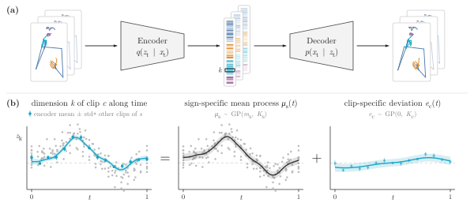

A VAE that learns the motion of each sign
Companion page of Multi-Task Gaussian Process VAE for Sign Language Analysis
(submitted to ESANN 2027)
Sign language data is motion: a sign is a short trajectory of the body, the hands and the face. We encode skeletons (MediaPipe landmarks of LSFB-ISOL, French Belgian Sign Language) with a variational auto-encoder, and explore the different ways the latent prior can encode information about time and about signs.
Three priors, three kinds of samples
A VAE encodes poses, not motion. Each frame is encoded on its own, with a standard normal prior. Reconstructions are faithful, but the prior knows nothing about time: sampled frames jump from one pose to the next.
A GP-VAE adds time, not meaning. A Gaussian process along time on each latent dimension ties the frames of a clip together: reconstructions can be evaluated at any time (here, a finer grid than the video's), and samples move smoothly. But nothing in the prior says what a sign looks like, so samples drift without meaning.
The MTGP-VAE learns the motion of each sign. Each sign gets a mean trajectory μs(t), shared by all its clips; a clip is this trajectory plus its own smooth deviation ec(t). Decoding μs shows the sign as the model learned it; drawing a new deviation generates a new clip of the sign.

Inside the latent space
Each latent dimension belongs to one body part. Move a knob to shift one dimension of the MTGP-VAE's average code, in standard deviations of the training codes; the grey skeleton is the average pose. Double-click a knob to reset it.
Decoded in advance, one dimension at a time, then added up in your browser: exact between body parts (each has its own decoder), approximate for several knobs of the same part.
It recognises signs
The prior gives the likelihood of a clip under each sign's trajectory: the most likely sign is a prediction. Trained with this classifier, the MTGP-VAE recognises 100 signs better than the same VAE with simpler sign-conditioned priors, and better than fitting the same MTGP prior afterwards on a frozen model.
| Model | Top-1 | Top-5 |
|---|
It spots and fixes tracking errors
A frame that is unlikely given the rest of the clip and its sign is an outlier. Here, for one frame, MediaPipe puts the signer's right hand on the left wrist. The model flags that frame, then redraws only the right hand's latent dimensions from the other frames (green). Click a point of the curve to jump to a frame.
And it generates new clips
Three of these nine clips of comprendre (to understand) were generated by the MTGP-VAE; the six others are real. Can you tell which?
Built on
- The MagmaClust framework by Leroy et al.
- The Kernax and Mimosa implementations by Lejoly et al.
- The LSFB corpus by the LSFB-Lab and the HuMaLearn team.